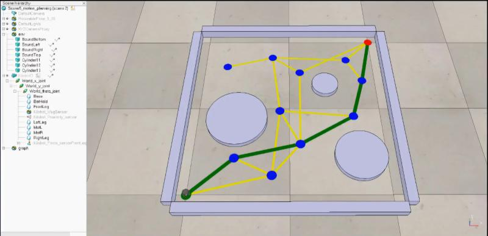
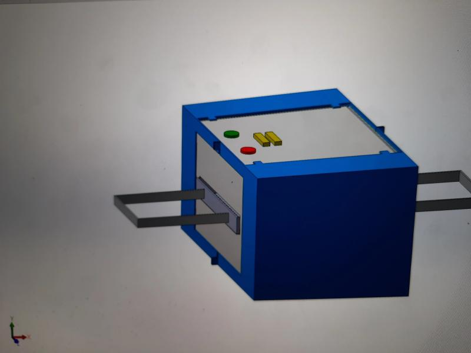
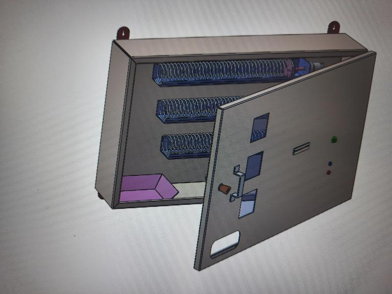
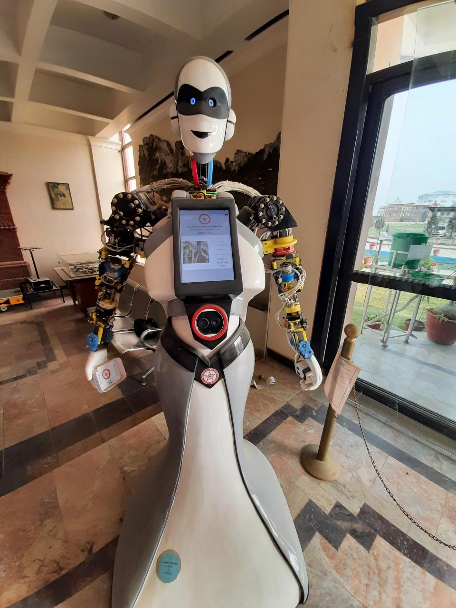
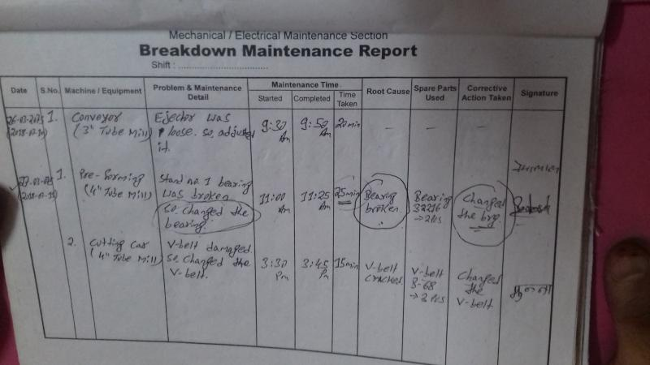
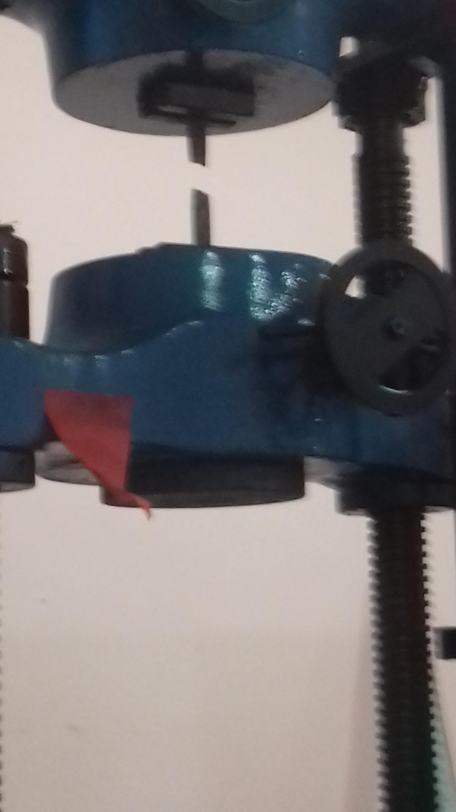
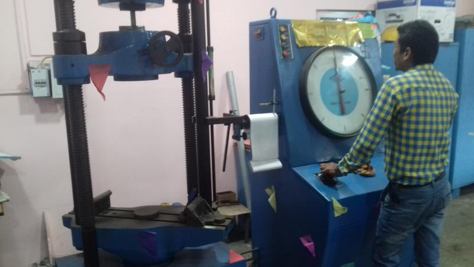

Experience
Data Analyst
Tech Interacts Inc · Full-time
Contributed to the development of a fraud detection project by designing and training machine learning models to identify anomalous patterns, before transitioning to graduate studies.
Skills :
Machine Learning
Technical Analyst
Route 2 Consulting · Full-time
• Assisted in developing proposals, marketing strategies, and budgets for tech training courses.
• Conducted feasibility studies on training materials to ensure quality and relevance.
• Reviewed and analyzed surveys to gather feedback for continuous improvement.
• Conducted feasibility studies on training materials to ensure quality and relevance.
• Reviewed and analyzed surveys to gather feedback for continuous improvement.
Skills :
Cost-Benefit Analysis
Forecasting
Data Analysis
Time Management
Graduate Assistant
Texas Tech University · Part-time
- Assisted Professor Changxue Xu in conduct of courses of Computer Aided Manufacturing and Engineering Economics.
- Held office hours to clarify concepts to the students.
- Graded tests and assignments as per university's standard.
- Held office hours to clarify concepts to the students.
- Graded tests and assignments as per university's standard.
Skills :
Time Management
Mechanical Engineer
Innovative Ghar Nepal · Full-time
• Carried out design reviews, offered CAD support, performed FEA & CFD analysis, reviewed BOMs, and development in compliance with customers.
• Designed and prototyped 3D models utilizing CAD software and 3D printing to validate design concepts.
• Built Arduino code to integrate sensors in mobile robots.
• Conducted engineering economic analysis to determine IRR, payback period, and other relevant metrics.
• Designed and prototyped 3D models utilizing CAD software and 3D printing to validate design concepts.
• Built Arduino code to integrate sensors in mobile robots.
• Conducted engineering economic analysis to determine IRR, payback period, and other relevant metrics.
Skills :
Solid Modeling
ANSYS
SOLIDWORKS
Operations Research
Arduino IDE
Mobile Robotics




Mechanical Engineer
Suryodaya Steel · Full-time
Engineering Intern
Mainawati Steel Industries · Full-time
• Conducted CAD modeling and FEA of components for corrective maintenance.
• Gained exposure to Universal Testing Machine (UTM) operations and quality control processes.
• Proposed strategies to enhance workplace safety within manufacturing processes and plant operations.
• Gained exposure to Universal Testing Machine (UTM) operations and quality control processes.
• Proposed strategies to enhance workplace safety within manufacturing processes and plant operations.
Skills :
Materials Testing
Computer-Aided Design (CAD)
Risk Assessment


